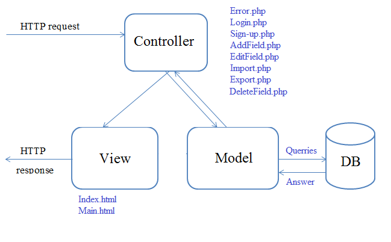

Agricultural Land Manager
Autori:
Abstract
Proiectul de fata este o aplicatie ce permite utilizatorilor sa isi gestioneze informatiile terenurile pe care le detine, oferind suport pentru specificarea anumitor atribute specifice terenurilor, precum si a anumitor zone de interes.
Introducere
Aplicatia AgLr este conceputa pentru gestionarea terenurilor detinute de utilizator, avand diverse optiuni de a importa si exporta datele in format CSV, JSON, XML. De asemenea utilizatorul poate sa specifice anumite zone de interes ce vor fi figurate pe harta.
Clientul va putea gestiona si terenurile pe care le detine in calitate de reprezentant al unei corporatii, sau al unui colectiv.
Tehnologii utilizate
Tehnologia de baza pentru comunicarea de tip client-server Web, este furnizata prin intermediul protocolului HTTP. Acesta este independent de platforma pe care ruleaza, comunicarea intre calculatoare putandu-se realiza indiferent de sistemele de operare. De asemenea, HTTP este un protocol "stateless" (fiecare comanda este executata independent). Conceptul de baza pe care il utilizeaza protocolul HTTP se bazeaza pe o serie de cereri si raspunsuri(request, response). Clientul Web trimite un mesaj(cerere) catre server. Mesajul contine: un URI (Uniform Resource Identifier), metoda de acces folosita, versiunea protocolului si unele meta-informatii ce sunt utile serverului. Raspunsul serverului contine: cod ce reprezinta un mesaj explicit catre state-codul trimis, meta-informatii ce vor fi procesate de client si informatia ceruta.
PHP este un limbaj utilizat pentru realizarea serverului aplicatiei Web.
XML reprezinta un meta-limbaj de marcare recomandat de Consortiul Web si a fost proiectat in scopul transferului de date intre aplicatii pe internet. In prezent, XML este utilizat pentru stocarea datelor nestructurate si semi-structurate.
Google Maps API reprezinta resursa publica ce permite vizualizarea unor imagini din satelit.
HTML5 este un limbaj de marcare utilizat in crearea paginilor Web.
CSS reprezinta un limbaj folosit pentru stilizarea paginilor HTML.
CSV este un tip de fisier al carui format se caracterizeaza prin delimitarea datelor prin intermediul virgulei.
Arhitectura aplicatiei
Aplicatia de fata se bazeaza pe utilizarea design-pattern-ului Model-View-Controller.
Modelul reprezinta componenta centrala ce implica comportamentul aplicatiei, fiind independenta de interfata. In Model sunt stocate toate obiectele aplicatiei. In momentul in care se schimba modelul, acesta notifica observerul ca a avut loc o schimbare. Atunci cand clientul completeaza campurile dintr-un formular, acestea vor fi stocate in instantele modelului.
View reprezinta interfata cu utilizatorul si modul in care acesta interactioneaza cu aplicatia noastra. In view se gasesc toate componentele interfetei: pagini html, foi css. Clientul va putea completa campurile din formulare, sau va putea sa acceseze o noua pagina din meniu. Toate acestea nu vor putea fi updatate cu ajutorul View-ului. De aceste detalii se va ocupa Controllerul.
Controller-ul primeste cereri pe care le transforma in comenzi pentru Model si View. El reprezinta legatura dintre Model si View. In momentul in care modelul se schimba, Controlerul va face update catre View. De asemenea in momentul in care utilizatorul va manipula View-ul, Controllerul va face update catre Model. In momentul in care clientu va alege sa editeze sau sa adauge un nou teren, va fi apelat Controllerul prin intermediul metodei POST din View. Acesta va procesa cererea si folosindu-se de ModelField va trimite raspunsul inapoi.
Fiecare pagina web va avea cate un Model View si un Controller deasemenea va exista si un fisier index.php ce va cuprinde toate require-urile necesare aplicatiei: pentru Model, View, Controller, Database, Paths etc. In fiecare Controller vor fi apelate metodele implementate in Model, specifice fiecarui site. Va mai exista si un folder public, unde se vor gasi fisierele css, imaginile.
Dra Braescu Ana-Maria se va ocupa de implementarea serverului utilizand design-patternul MVC.

Baza de date implementata in MySQL, este utilizata pentru stocarea informatiilor referitoare la terenuri, la persoanele care detin terenurile, useri.
Functionarea aplicatiei
Logarea si crearea unui cont nou:
In cazul in care clientul doreste sa se logheze pe aplicatie, va da click pe butonul "Login" si va completa fieldurile aferente formularului de login. Datele vor fi trimise catre Controller care le va compara cu cele existente deja in baza de date. In cazul in care parola si adresa de email sunt corecte, Controller-ul va trimite View-ului comanda de a-l redirectiona pe utilizator pe Homepage. In caz contrar utilizatorul va fi redirectionat pe pagina de Login. Daca clienul nu are un cont existent si doreste sa creeze unul nou, acesta va da click pe "Sign Up". Controller-ul va trimite View-ului comanda de a afisa un formular pe care utilizatorul trebuie sa il completeze. Utilizatotul va fi redirectionat pe "Home" iar datele din formular vor fi preluate cu ajutorul Controllerului si salvate in baza de date.
Afisarea tabelului cu terenurile disponibile:
Dupa ce a avut loc logarea cu succees, utilizatorul este redirectionat catre Homepage si i se va afisa un tabel ce va cuprinde numele terenutilor detinute de el, precum si un buton de edit si unul de delete. In cazul in care utilizatotul nu detine niciun teren tabelul nu va mai fi afisat, se va afisa doar butonul de add field. Toti acesti pasi se vor face cu ajutorul Controller-ului. Modelul este notificat de Controller si vor fi apelate functiile specifice modelului ce verifica in baza de date exista rezultate conform celor cerute de catre utilizator, Controller-ul va trimite comanda View-ului pentru a afisa pagina SearchResult. In caz contrar, Controller-ul va fi notificat ca nu exista date disponibile, iar Controllerul va notifica View-ul sa afiseze doar butonul de add field.
Adaugarea unui teren:
In cazul in care clientul doreste sa adauge un teren, va da click pe butonul "Adauga teren". Controller-ul va trimite View-ului comanda de a afisa un formular pe care utilizatorul va trebui sa il completeze. Datele din formular vor fi preluate si salvate in baza de date.
Dra Braescu Ana-Maria s-a ocupat de adaugarea unui teren.
Editarea unui teren:
De asemenea, utilizatorul poate alege sa editeze un anumit teren. Pentru a realiza acest lucru, clientul va da click pe butonul "Editeaza teren". Controller-ul va trimite View-ului comanda de a afisa un formular ce va cuprinde datele deja existente despre teren pe care utilizatorul le va putea edita. Datele din formular vor fi preluate si salvate in baza de date.
Dra Ungureanu Ana-Maria s-a ocupat de adaugarea unui teren.
Butoanele de Import/Export:
Utilizatorul are posibilitatea de a importa si de a exporta datele referitoare la terenurile detinute in formatele CSV, JSON si XML.
Ambele membre ale echipei s-au ocupat de realizarea importului/exportului.
Concluzii
In concluzie, aceasta aplicatie Web reprezinta o modalitate de a gestiona cu usurinta trenurile detinute de unul sau mai multi utilizatori. Acestea pot fi urmarite pe harta aferenta zonei de cautare.
Bibliografie
- http://www.w3schools.com/
- https://developers.google.com/maps/
- https://www.wikipedia.org/
- https://developer.mozilla.org/en-US/docs/Web/Guide/HTML/HTML5
- https://developer.mozilla.org/en-US/docs/Web/Guide/CSS
- https://stackoverflow.com/questions/5813168/how-to-import-csv-file-in-php
- https://www.cloudways.com/blog/import-export-csv-using-php-and-mysql/
- https://developers.google.com/maps/documentation/javascript/adding-a-google-map
- https://www.w3schools.com/graphics/google_maps_intro.asp
- https://bitbucket.org/schmijos/xmlserializer/src/5df334e2485bc90a2e68c598d9f21b443d020cf2/XML/Serializer.php?at=default&fileviewer=file-view-default
- https://www.experts-exchange.com/questions/28991075/ajax-call-to-redirect-to-a-different-page-with-data-from-controller.html
- https://www.youtube.com/watch?v=OsCTzGASImQ&list=PLfdtiltiRHWGXVHXX09fxXDi-DqInchFD
- https://www.youtube.com/watch?v=Aw28-krO7ZM&list=PL7A20112CF84B2229